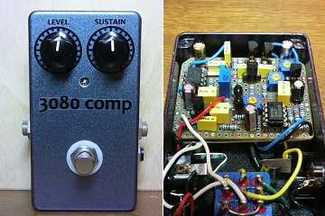
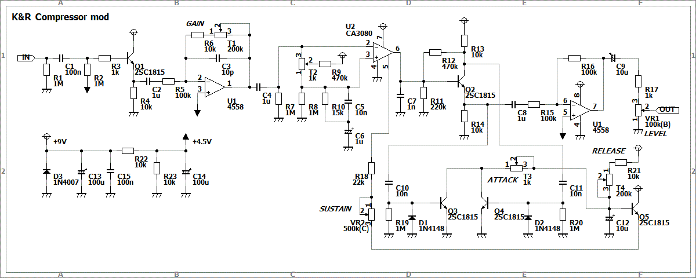
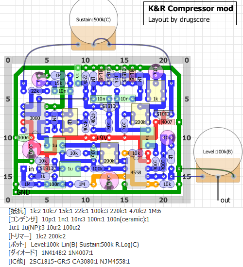
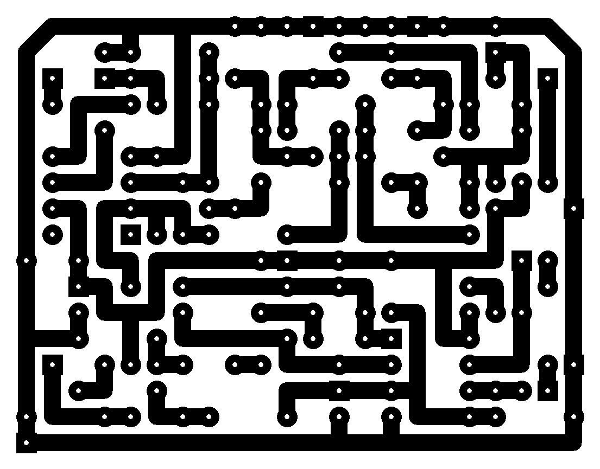

ひよこのページ コンプレッサー改
2012年06月28日 カテゴリー：自作エフェクター（アナログ）

最近よくベースを弾いているのですが、やはりベースにはコンプレッサーが必須ですね。
コンプレッサーの自作といえば、OTA（LM3080等）を用いたMXR DYNACOMPやROSS COMPRESSORかフォトカプラを使ったオプティカル（光学式）コンプになってくると思いますが、以前作ったコンプレッサーにCA3080を使っていたのでそれを流用することにしました。
▽回路図

ほとんどひよこのページのコンプレッサーと同じです。高出力のベースだと歪むことがあるらしいので、ゲインを上下できるようにしてみました。ついでにバッファーを前後につける形になり部品数が多くなってしまいましたが、modという程のものではありません。アタックとリリースはトリマーをつけています。海外の記事では「リリース」のことを「アタック」というふうに表記してあることが多いようです。アタックは回路図で示してある位置になります（ひよこのページの掲示板で詳細に書いてありました）。この他にも原音を混ぜてRATIOコントロールをつけたりトーンをつけたりするモディファイもあるようですが、操作性が悪くなりそうなのでやめておきました。
▽レイアウト

▽PCB（横58.4mm縦45.7mm）

音については自然な効き具合で良さそうな感じです。トリマーをいろいろつけてみたものの結局いじっていないので、改造した意味はあまりなかったかなぁと思います。